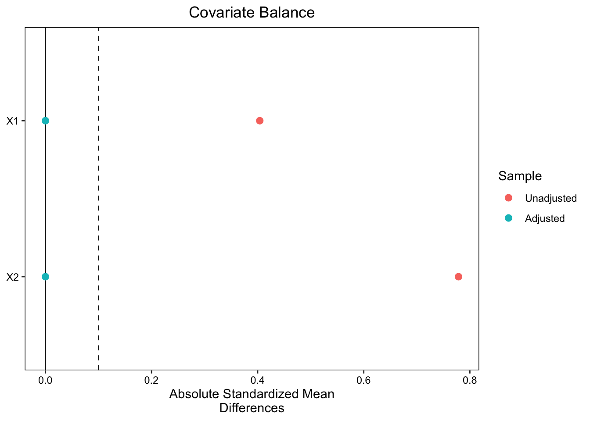
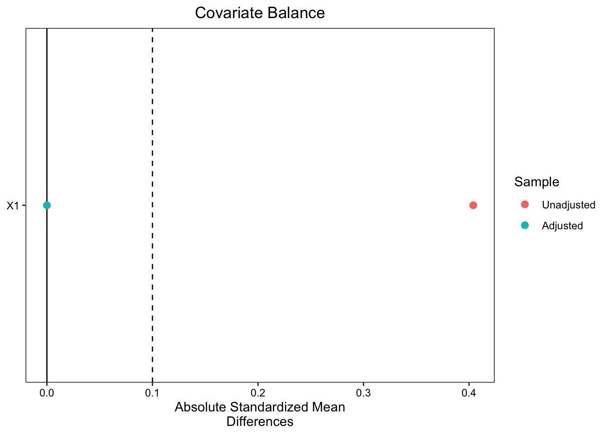

# A mega useful visualization tool to compare unadjusted vs. adjusted # is the "love" plot (named after biostatistician Thomas Love)iptw_love_plot <-love.plot(data %>%select(X1, X2), treat=data$T, s.d.denom="pooled", abs=TRUE, binary ="std", weights=data$weights, thresholds=c(m=.1))iptw_love_plot

# Generate a point estimateiptw_est <-lm_robust(Y ~ T, data=data, weights=weights)point_wtd <-coef(iptw_est)[2]point_wtd
T
2.089427
Bootstrapping
Recall again that bootstrapping is a way of approximating the sampling distribution of an estimator and estimating features of it (such as the variance), by resampling from our sample. With independent observations, the nonparametric bootstrap repeatedly resamples observations with replacement from the sample and computes an estimate for each resample.
set.seed(60637)nBoot <-1000# Number of iterationsate_boot <-rep(NA, nBoot) # Placeholder to store estimates# For each iterationfor(boot in1:nBoot){# Resample rows with replacement data_boot <- data[sample(1:nrow(data), nrow(data), replace=TRUE),] #replace = T is key!# Fit the propensity score model on the bootstrapped data pscore_model <-lm_robust(T ~ X1*X2, data=data_boot)# Get the propensity scores for each observation data_boot$ps <-predict(pscore_model, newdata = data_boot) # data_boot$ps <- ifelse(data_boot$ps > 0.999, 0.999, data_boot$ps)# data_boot$ps <- ifelse(data_boot$ps > 0.001, 0.001, data_boot$ps)# Calculate the weights data_boot$wt_boot <-NA data_boot$wt_boot <-ifelse(T ==1, 1/data_boot$ps, 1/(1-data_boot$ps))# weighted difference-in-means boot_reg <-lm_robust(Y ~ T, data=data_boot, weights=data_boot$wt_boot)# Store the weighted difference-in-means ate_boot[boot] <-coef(boot_reg)[2]}# Take the SD of the ate_boot to get our estimated SE - can do asymptotic inferencesd(ate_boot)
ps_model <-lm_robust(T ~ X1, data = data)data$ps <-predict(ps_model, newdata = data)# Let's see the histogram of the propensity scores among treated and controldata %>%ggplot(aes(x=ps)) +geom_histogram(bins=30) +facet_wrap(~T) +xlab("Estimated propensity score") +theme_bw()
Balance Measures
Type Diff.Adj
X1 Binary -0
Effective sample sizes
Control Treated
Unadjusted 498. 502.
Adjusted 478.34 482.46
# A mega useful visualization tool to compare unadjusted vs. adjusted # is the "love" plot (named after biostatistician Thomas Love)iptw_love_plot <-love.plot(data %>%select(X1), treat=data$T, s.d.denom="pooled", abs=TRUE, binary ="std", weights=data$weights, thresholds=c(m=.1))iptw_love_plot

# Generate a point estimateiptw_est <-lm_robust(Y ~ T, data=data, weights=weights)point_wtd <-coef(iptw_est)[2]point_wtd
T
2.332916
Bootstrapping
Recall again that bootstrapping is a way of approximating the sampling distribution of an estimator and estimating features of it (such as the variance), by resampling from our sample. With independent observations, the nonparametric bootstrap repeatedly resamples observations with replacement from the sample and computes an estimate for each resample.
set.seed(60637)nBoot <-1000# Number of iterationsate_boot <-rep(NA, nBoot) # Placeholder to store estimates# For each iterationfor(boot in1:nBoot){# Resample rows with replacement data_boot <- data[sample(1:nrow(data), nrow(data), replace=TRUE),] #replace = T is key!# Fit the propensity score model on the bootstrapped data pscore_model <-lm_robust(T ~ X1, data=data_boot)# Get the propensity scores for each observation data_boot$ps <-predict(pscore_model, newdata = data_boot) # data_boot$ps <- ifelse(data_boot$ps > 0.999, 0.999, data_boot$ps)# data_boot$ps <- ifelse(data_boot$ps > 0.001, 0.001, data_boot$ps)# Calculate the weights data_boot$wt_boot <-NA data_boot$wt_boot <-ifelse(T ==1, 1/data_boot$ps, 1/(1-data_boot$ps))# weighted difference-in-means boot_reg <-lm_robust(Y ~ T, data=data_boot, weights=wt_boot)# Store the weighted difference-in-means ate_boot[boot] <-coef(boot_reg)[2]}# Take the SD of the ate_boot to get our estimated SE - can do asymptotic inferencesd(ate_boot)